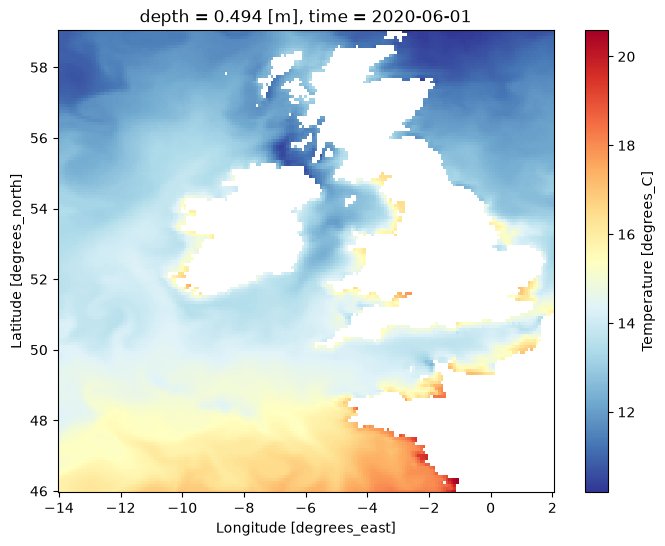
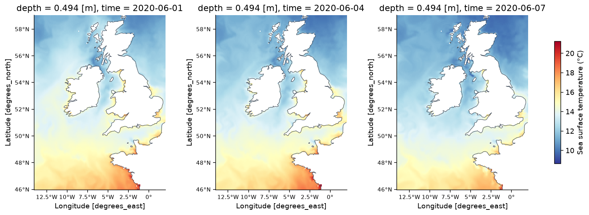
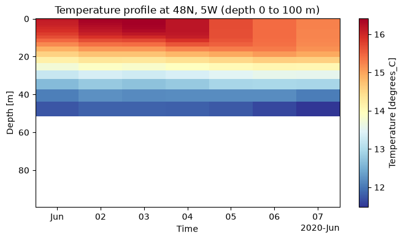
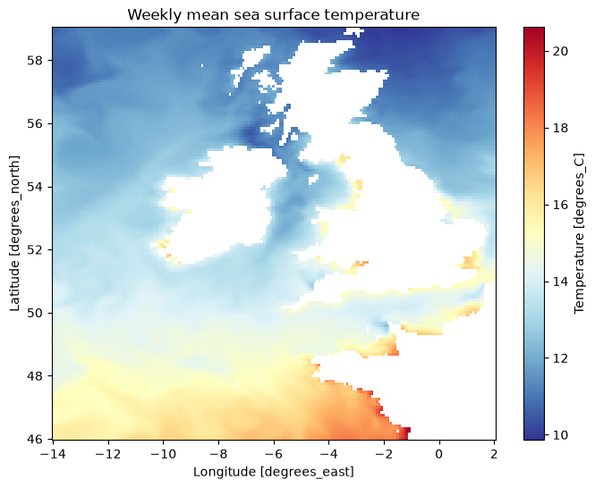
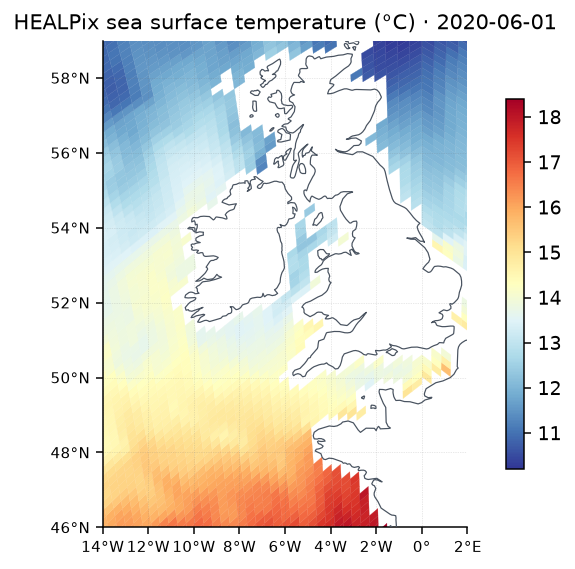

Python で海洋モデルデータを扱う：Xarray、Dask、Zarr、HEALPix#
概要
魚の位置推定に入る前に、pangeo-fish がタグのデータと比べる「参照」データ、つまり 3 次元の海洋モデルに慣れておきましょう。
このノートブックでは、全球海洋再解析 GLORYS（Global Ocean Physics Reanalysis、1/12°、日平均）を Copernicus Marine Service から直接開きます。そして、Pangeo エコシステムの主要なツールを使って、データを眺め、図を描き、計算し、保存します。
Xarray：ラベル付きの N 次元配列です（
data.frameに似ていますが、時間・深さ・緯度・経度のような複数の次元を持てます）。Dask：計算を並列に、しかも必要になったときにだけ実行します（lazy 評価：必要になるまで計算しません）。そのため、メモリより大きなデータも扱えます。
Zarr：N 次元配列のための、チャンクに分割されたクラウド向けのファイル形式です。Copernicus Marine はデータを Zarr で配信しており、
pangeo-fishも途中結果を Zarr で保存します。HEALPix（離散全球格子システム、DGGS の一つ）：球面を等面積に分割する格子です。
pangeo-fishはすべての計算をこの格子の上で行います。ここでは GLORYS を HEALPix に変換し、xdggsで描画します。
所要時間：約 25 分です。Shift+Enter でセルを 1 つずつ実行してください。引数をすべて理解する必要はありません。pangeo-fish のノートブックで再び出てくるオブジェクトに見覚えがある、という状態になることが目標です。
カーネル：Python (pangeo-fish) カーネルを使ってください（ノートブックの右上）。
このページに表示されている図は、事前に実行した結果です（HEALPix レベル 8）。インタラクティブな地図は、ノートブックを JupyterLab で実行すると操作できます。
0. R ユーザーの方へ：対応表#
参加者の多くは R をお使いだと思います。R で知っていることと、今日 Python で目にするものの大まかな対応を示します。
R では |
Python では（今日） |
補足 |
|---|---|---|
|
|
|
|
|
2 次元の表（今日はあまり使いません） |
|
|
ラベル付きの N 次元配列です。 |
|
|
ラベル（座標の値）で選択します |
|
|
整数の位置で選択します |
|
|
集計は名前の付いた次元に沿って行います。NaN は既定で無視されます |
|
|
|
|
|
並列計算、lazy 評価（必要になるまで計算しない） |
|
|
ファイルの読み込み |
|
|
代入 |
|
|
属性・要素へのアクセス |
|
|
R ユーザーが戸惑いやすい点が 2 つあります。
Python ではインデント（字下げ）に意味があります（
{ }の代わりになります）。インデックスは 0 から始まります。
slice(0, 10)は位置 0 から 9 までを表します。
1. 準備#
ライブラリを読み込む#
import pathlib
import numpy as np
import xarray as xr
import matplotlib.pyplot as plt
import hvplot.xarray # xarray のオブジェクトに .hvplot アクセサーを追加する
import copernicusmarine
import xdggs
from healpix_resample import BilinearResampler
xr.set_options(display_expand_attrs=False)
print("xarray", xr.__version__, "| copernicusmarine", copernicusmarine.__version__, "| xdggs", xdggs.__version__)
xarray 2026.9.0 | copernicusmarine 2.5.1 | xdggs 0.6.0
Dask クラスターを起動する#
Dask は処理を多数の小さなタスクに分け、ワーカーの上で並列に実行します。Pangeo@EOSC のサーバーには複数の CPU があるので、それらを使うローカルクラスターを起動します。
セルを実行したら、Dashboard のリンクをクリックしてください（または、JupyterLab の左サイドバーにある Dask タブを開き、Task Stream と Progress をクリックします）。このあとノートブックの中で計算が進む様子を目で見ることができます。
from dask.distributed import Client
client = Client() # このマシンの CPU を使うローカルクラスター
client
Copernicus Marine にログインする（初回のみ）#
Copernicus Marine Service は無料ですが、アカウントが必要です（登録はこちら）。
下のセルは、初回だけユーザー名とパスワードを尋ね、ホームディレクトリの ~/.copernicusmarine/.copernicusmarine-credentials に保存します（Pangeo@EOSC のホームディレクトリは永続的です）。次にノートブックを開いたときは、何も聞かれません。
credentials_file = pathlib.Path.home() / ".copernicusmarine" / ".copernicusmarine-credentials"
if credentials_file.exists():
print("Copernicus Marine credentials found:", credentials_file)
else:
copernicusmarine.login() # ユーザー名とパスワードの入力を求められる
2. Xarray で GLORYS を開く#
日平均の GLORYS 再解析（dataset_id="cmems_mod_glo_phy_my_0.083deg_P1D-m"。pangeo-fish が既定の参照モデルとして使うものと同じデータセットです）を、次の条件で開きます。
pangeo-fish のチュートリアルで使うケルト海・ビスケー湾・イギリス海峡の範囲（
latitude北緯 46〜59 度、longitude西経 14 度〜東経 2 度）1 週間分のデータ
変数
thetao（海水のポテンシャル水温）とzos（海面高度）
この時点では、まだ何もダウンロードされません。copernicusmarine.open_dataset はメタデータだけを読み、lazy（まだデータを読み込んでいない）な xarray.Dataset を返します。
%%time
bbox = {"latitude": [46, 59], "longitude": [-14, 2]}
time_slice = slice("2020-06-01", "2020-06-07")
glorys = copernicusmarine.open_dataset(
dataset_id="cmems_mod_glo_phy_my_0.083deg_P1D-m",
variables=["thetao", "zos"],
minimum_longitude=bbox["longitude"][0],
maximum_longitude=bbox["longitude"][1],
minimum_latitude=bbox["latitude"][0],
maximum_latitude=bbox["latitude"][1],
start_datetime=time_slice.start,
end_datetime=time_slice.stop,
)
glorys
CPU times: user 836 ms, sys: 371 ms, total: 1.21 s
Wall time: 8.59 s
<xarray.Dataset> Size: 87MB
Dimensions: (depth: 50, latitude: 157, longitude: 193, time: 7)
Coordinates:
* depth (depth) float32 200B 0.494 1.541 2.646 ... 5.275e+03 5.728e+03
* latitude (latitude) float32 628B 46.0 46.08 46.17 ... 58.83 58.92 59.0
* longitude (longitude) float32 772B -14.0 -13.92 -13.83 ... 1.833 1.917 2.0
* time (time) datetime64[ns] 56B 2020-06-01 2020-06-02 ... 2020-06-07
Data variables:
thetao (time, depth, latitude, longitude) float64 85MB dask.array<chunksize=(2, 25, 157, 193), meta=np.ndarray>
zos (time, latitude, longitude) float64 2MB dask.array<chunksize=(2, 157, 193), meta=np.ndarray>
Attributes: (25)少し時間をとって、上の HTML 表示を見てみましょう（三角のマークや右側のアイコンをクリックしてください）。
Dimensions（次元）：
time、depth、latitude、longitudeとそれぞれの大きさ。Coordinates（座標）：各次元に沿ったラベル（日付、メートル単位の深さ、度）。
Data variables（データ変数）：
thetaoは 4 次元（time、depth、latitude、longitude）、zosは 3 次元です。Attributes（属性）：メタデータ（単位、正式名称、出典など）。
データ本体は Dask 配列です。チャンクの大きさとチャンクの数を見てください。各チャンクは、Copernicus のクラウド上にある Zarr ストアの、圧縮された小さな断片です。
xarray.Datasetは、次元と座標を共有する複数の変数をまとめて持ちます。- データセットを開くのは一瞬です。データは必要になったときに初めて読み込まれます。
データの一部を選ぶ#
.sel() では座標の値（ラベル）で、.isel() では位置で選択します。初日の海面水温（最も浅い深さの層、約 0.5 m）を取り出してみましょう。
sst = glorys["thetao"].isel(depth=0) # DataArray：time、latitude、longitude
sst_day1 = sst.sel(time="2020-06-01")
sst_day1
<xarray.DataArray 'thetao' (latitude: 157, longitude: 193)> Size: 242kB
dask.array<getitem, shape=(157, 193), dtype=float64, chunksize=(157, 193), chunktype=numpy.ndarray>
Coordinates:
* latitude (latitude) float32 628B 46.0 46.08 46.17 ... 58.83 58.92 59.0
* longitude (longitude) float32 772B -14.0 -13.92 -13.83 ... 1.833 1.917 2.0
depth float32 4B 0.494
time datetime64[ns] 8B 2020-06-01
Attributes: (7)図を描く#
xarray には matplotlib を使った .plot() メソッドがあり、次元名と単位が自動的に使われます。この 1 枚の地図のデータが Copernicus のクラウドからダウンロードされるのは、この時点です（Dask のダッシュボードを見てください）。
sst_day1.plot(cmap="RdYlBu_r", figsize=(8, 6));

インタラクティブな地図（拡大・縮小、マウスを重ねて値を読む、時間のスライダー）には hvplot を使います。
sst.hvplot(
x="longitude", y="latitude", cmap="RdYlBu_r", geo=True, coastline=True,
frame_width=500, title="GLORYS sea surface temperature (degC)",
)

1 地点の時系列#
標識された魚は、水温と深度を記録します。この記録をモデルと比べるために、pangeo-fish は魚がいる可能性のある場所の近くのモデル値を調べます。位置が1 か所わかっている場合、これに相当するのが method="nearest" を付けた .sel() です。
point = glorys["thetao"].sel(latitude=48.0, longitude=-5.0, method="nearest")
point.sel(depth=slice(0, 100)).plot(x="time", yincrease=False, cmap="RdYlBu_r", figsize=(8, 4))
plt.title("Temperature profile at 48N, 5W (depth 0 to 100 m)");

.sel()はラベルで、.isel()は位置で選択します。method="nearest"は最も近い格子点を選びます。.plot()は静的な図を、.hvplot()はインタラクティブな図を作ります。
3. Dask：lazy 計算と並列計算#
注釈
ワークショップでは任意です。時間が足りない場合はこの節を飛ばします。この節だけで実行できるので、あとで取り組んでみてください。
1 週間の平均海面水温を計算してみましょう。式を書いただけでは、何も計算されません。xarray と Dask はタスクグラフを組み立てるだけです。
weekly_mean = sst.mean("time")
weekly_mean # まだ lazy のまま（計算していない）：Dask 配列の表示を見てみよう
<xarray.DataArray 'thetao' (latitude: 157, longitude: 193)> Size: 242kB
dask.array<mean_agg-aggregate, shape=(157, 193), dtype=float64, chunksize=(157, 193), chunktype=numpy.ndarray>
Coordinates:
* latitude (latitude) float32 628B 46.0 46.08 46.17 ... 58.83 58.92 59.0
* longitude (longitude) float32 772B -14.0 -13.92 -13.83 ... 1.833 1.917 2.0
depth float32 4B 0.494
Attributes: (7).compute() は Dask クラスター上でグラフを実行し、結果を（NumPy 配列として）メモリに返します。実行中はダッシュボードを見てください。小さな四角形の一つひとつが、ワーカーが読み込んで平均しているチャンクです。
%%time
weekly_mean = weekly_mean.compute()
weekly_mean
CPU times: user 2.58 s, sys: 753 ms, total: 3.33 s
Wall time: 55.2 s
<xarray.DataArray 'thetao' (latitude: 157, longitude: 193)> Size: 242kB
array([[15.78572955, 15.7843693 , 15.80749361, ..., nan,
nan, nan],
[15.78531101, 15.79001958, 15.81146973, ..., nan,
nan, nan],
[15.78656663, 15.79096129, 15.80801678, ..., nan,
nan, nan],
...,
[10.72788826, 10.72569093, 10.74044445, ..., 10.6722225 ,
10.69419583, 10.70926325],
[10.7169016 , 10.69974147, 10.69440509, ..., 10.53263956,
10.57020348, 10.58328284],
[10.71522744, 10.69597462, 10.69743951, ..., 10.436794 ,
10.46117393, 10.481787 ]], shape=(157, 193))
Coordinates:
* latitude (latitude) float32 628B 46.0 46.08 46.17 ... 58.83 58.92 59.0
* longitude (longitude) float32 772B -14.0 -13.92 -13.83 ... 1.833 1.917 2.0
depth float32 4B 0.494
Attributes: (7)weekly_mean.plot(cmap="RdYlBu_r", figsize=(8, 6))
plt.title("Weekly mean sea surface temperature");

ほかの計算もすべて同じように動きます。.std("time")、.max("depth")、(a - b)、.where(condition) などです。数式を書けば、チャンクの扱いと並列化は Dask が引き受けます。pangeo-fish はまさにこの仕組みを使って、すべての格子点・すべての深さ・すべての時刻について、タグの水温とモデルの水温の差を計算しています。
演習（時間があれば）：3 次元の場全体の週平均 glorys["thetao"].mean("time") を計算し、ダッシュボードを見てみましょう。はるかに多くのチャンクが使われます。
- Dask を使った配列の操作は lazy（必要になるまで計算しない）です。
.compute()（または描画）によって計算が実行されます。 - Dask のダッシュボードで、何が起きているかを確認できます。
4. Zarr：データセットを保存する（そして再び開く）#
注釈
ワークショップでは任意です。時間が足りない場合はこの節を飛ばします。この節だけで実行できるので、あとで取り組んでみてください。
Zarr は、各チャンクを別々の圧縮ファイルとして保存し、メタデータを小さな JSON ファイルに保存します。Copernicus Marine がクラウドで使っている形式であり、pangeo-fish がすべての途中結果（diff.zarr、emission.zarr など）を書き出す形式でもあります。そのため、ワークフローの各ステップを途中から再開できます。
1 週間分の海面水温のサブセットを、ローカルに保存してみましょう。データが（やはり並列で）ダウンロードされ、ディスクに書き込まれます。
%%time
# drop_encoding()：リモートのストアの圧縮設定を破棄し、Zarr に選ばせる
sst.to_dataset(name="thetao").drop_encoding().to_zarr("glorys_sst.zarr", mode="w")
CPU times: user 3.3 s, sys: 1.19 s, total: 4.49 s
Wall time: 1min 33s
<xarray.backends.zarr.ZarrStore at 0x3844e5ab0>
Zarr ストアはディレクトリです。中身を見てみましょう。
store = pathlib.Path("glorys_sst.zarr")
files = sorted(p for p in store.rglob("*") if p.is_file())
print(len(files), "files, total", round(sum(p.stat().st_size for p in files) / 1e6, 1), "MB")
for p in files[:12]:
print(p.relative_to(store))
14 files, total 0.5 MB
depth/c
depth/zarr.json
latitude/c/0
latitude/zarr.json
longitude/c/0
longitude/zarr.json
thetao/c/0/0/0
thetao/c/1/0/0
thetao/c/2/0/0
thetao/c/3/0/0
thetao/zarr.json
time/c/0
xr.open_zarr() で再び開きます。リモートのデータと同じように、データセットは再び lazy（Dask を使用）になります。Zarr を使うと、ローカルのデータもクラウドのデータも同じように扱えます。
sst_local = xr.open_zarr("glorys_sst.zarr")
sst_local
<xarray.Dataset> Size: 2MB
Dimensions: (time: 7, latitude: 157, longitude: 193)
Coordinates:
* time (time) datetime64[ns] 56B 2020-06-01 2020-06-02 ... 2020-06-07
* latitude (latitude) float32 628B 46.0 46.08 46.17 ... 58.83 58.92 59.0
* longitude (longitude) float32 772B -14.0 -13.92 -13.83 ... 1.833 1.917 2.0
depth float32 4B ...
Data variables:
thetao (time, latitude, longitude) float64 2MB dask.array<chunksize=(2, 157, 193), meta=np.ndarray>.to_zarr()で書き込み、xr.open_zarr()で読み込みます。どちらもチャンクを意識して並列に動きます。- リモート（クラウド）の Zarr もローカルの Zarr も、同じように扱えます。
5. HEALPix：魚の追跡のための等面積格子#
GLORYS は規則的な緯度経度格子の上にあります。このような格子には、移動モデルにとって不都合な点があります。極に近づくほど格子が小さくなるのです（1/12° の格子は、赤道では約 9 km × 9 km ですが、北緯 60 度では 9 km × 4.5 km です）。pangeo-fish は魚が 1 日に泳げる距離を制限します。この制限は、すべてのセルの面積が同じで、隣り合うセルまでの距離がそろっている方が、計算がずっと簡単です。
HEALPix（Hierarchical Equal Area isoLatitude Pixelisation）は、球面を 12 個の基本セルに分け、解像度レベルが 1 つ上がるごとに各セルを 4 つに分割します。
レベル |
セルの数 |
セルの大きさ（目安） |
|---|---|---|
0 |
12 |
6 400 km |
5 |
12 288 |
200 km |
8 |
786 432 |
25 km |
10 |
12 582 912 |
6 km |
12 |
201 326 592 |
1.6 km |
HEALPix は離散全球格子システム（DGGS）の一つです。ほかに H3（六角形）や rHEALPix などがあります。Python パッケージ xdggs は、xarray に DGGS の機能を追加します。データセットは latitude/longitude の代わりに cell_ids という座標を持ち、xdggs はセルの中心や多角形、隣接するセルを計算したり、描画したりできます。
GLORYS を HEALPix に変換する#
ここでは healpix-resample を使います。GRID4EARTH プロジェクトで開発された小さなパッケージで（pangeo-fish でも使われています）、任意の経度・緯度の点の値を HEALPix 格子へ内挿します。手順は 3 つです。
GLORYS の格子点の経度と緯度をリサンプラーに渡します（内挿の重みは 1 回だけ計算されます）。
値に対して
resample()を呼びます（1 行が 1 時刻）。結果を
cell_ids座標を持つxarray.Datasetに戻し、どの格子（HEALPix とそのレベル）なのかをxdggsに伝えます。
下の小さな関数はこの 3 つの手順をまとめたもので、変換を 1 行で呼び出せるようにします。BilinearResampler は最も簡単な内挿法です。このパッケージには、最近傍、バイキュービック、保存型（conservative）などのリサンプラーもあり、同じ使い方ができます。pangeo-fish（次のノートブックの regrid_dataset_hpresample）は、海岸線をきちんと扱うために、これらのいくつかを組み合わせて使います。
def to_healpix(ds, level, var="thetao", ellipsoid="WGS84"):
# (time, latitude, longitude) の変数を HEALPix 格子へ内挿する
# 1. 格子点を、経度と緯度の 1 次元配列にする
lon2d, lat2d = np.meshgrid(ds["longitude"].values, ds["latitude"].values)
resampler = BilinearResampler(
lon_deg=lon2d.ravel().astype("float64"),
lat_deg=lat2d.ravel().astype("float64"),
level=level,
verbose=False,
)
# 2. 内挿する：行 = 時刻、列 = 格子点
values = ds[var].values.reshape(ds.sizes["time"], -1)
result = resampler.resample(values)
# 3. latitude/longitude の代わりに cell_ids を持つ xarray に戻す
grid_info = {"grid_name": "healpix", "level": level, "indexing_scheme": "nested", "ellipsoid": ellipsoid}
return xr.Dataset(
{var: (("time", "cell_ids"), result.cell_data, ds[var].attrs)},
coords={"time": ds["time"], "cell_ids": ("cell_ids", result.cell_ids.astype("int64"), grid_info)},
)
refinement_level = 8 # セルは約 25 km。pangeo-fish では通常 10〜12 を使う
sst_healpix = to_healpix(sst_local.compute(), refinement_level)
sst_healpix
<xarray.Dataset> Size: 169kB
Dimensions: (time: 7, cell_ids: 2646)
Coordinates:
* time (time) datetime64[ns] 56B 2020-06-01 2020-06-02 ... 2020-06-07
* cell_ids (cell_ids) int64 21kB 43957 43958 43959 ... 228889 228892 228928
depth float32 4B 0.494
Data variables:
thetao (time, cell_ids) float64 148kB nan nan nan ... 10.79 10.9 11.02データセットの空間次元は、latitude と longitude の代わりに cell_ids の 1 つだけになりました。cell_ids の属性が格子を記述しています。xdggs.decode() はそれを読み取り、.dggs アクセサーを使えるようにします。
sst_healpix = xdggs.decode(sst_healpix)
sst_healpix.dggs.grid_info
HealpixInfo(level=8, ellipsoid='WGS84', indexing_scheme='nested')
# セル ID から xdggs が計算したセルの中心
sst_healpix.dggs.cell_centers()
<xarray.Dataset> Size: 42kB
Dimensions: (cell_ids: 2646)
Coordinates:
latitude (cell_ids) float64 21kB 45.91 45.91 46.11 ... 59.03 59.22 59.22
longitude (cell_ids) float64 21kB 1.335 0.9534 0.9574 ... 345.8 346.3 347.3
Dimensions without coordinates: cell_ids
Data variables:
*empty*HEALPix 格子の上に描く#
.dggs.explore() は、各セルを多角形としてインタラクティブな地図上に描きます（拡大すると、等面積のセルが見えます。セルが経線に沿って並んでいないことに注目してください）。
sst_healpix["thetao"].isel(time=0).dggs.explore(cmap="RdYlBu_r", alpha=0.8)

HEALPix のデータセットを Zarr として保存します。これは、次のノートブックのステップ 3 で pangeo-fish が作るファイル（diff-regridded.zarr）とまったく同じ種類のものです。.dggs.encode("xdggs") は格子の情報を cell_ids の属性に書き戻すので、読み込んだあとで再びデコードできます。
sst_healpix.dggs.encode("xdggs").drop_encoding().to_zarr("glorys_sst_healpix.zarr", mode="w")
xr.open_zarr("glorys_sst_healpix.zarr").pipe(xdggs.decode)
<xarray.Dataset> Size: 169kB
Dimensions: (time: 7, cell_ids: 2646)
Coordinates:
* time (time) datetime64[ns] 56B 2020-06-01 2020-06-02 ... 2020-06-07
* cell_ids (cell_ids) int64 21kB 43957 43958 43959 ... 228889 228892 228928
depth float32 4B ...
Data variables:
thetao (time, cell_ids) float64 148kB dask.array<chunksize=(7, 2646), meta=np.ndarray>
Indexes:
cell_ids HealpixIndex(level=8, indexing_scheme=nested, kind=pandas)- HEALPix のセルはすべて同じ面積を持ちます。これは移動モデルに必要な性質です。
healpix-resample（GRID4EARTH）を使うと、任意の経度・緯度のデータを 3 行で HEALPix に内挿できます。xdggsでは、HEALPix のデータセットは格子を記述する属性付きのcell_ids座標を持ちます。xdggs.decode()で.dggsアクセサー（セルの中心、多角形、explore()）が使えるようになります。pangeo-fishは、モデルとタグの比較結果を HEALPix に再格子化し、Zarr として保存して、その格子の上で位置推定を行います。
6. 後片付け#
次のノートブックに進む前に、Dask クラスターを閉じます（各ノートブックはそれぞれ自分のクラスターを起動します）。
client.close()
さらに学ぶために#
xdggs と DGGS コミュニティ。
GRID4EARTH のパッケージ：healpix-geo（格子 ID、幾何計算）、healpix-resample（上で使用）、healpix-convert（ERA5 や CAMS などの Zarr データセット全体を、Dask を使って HEALPix DGGS の Zarr 形式に一括変換）、healpix-plot（静的な地図）。
HEALPix の論文：Górski et al. (2005), HEALPix: A Framework for High-Resolution Discretization and Fast Analysis of Data Distributed on the Sphere, ApJ 622, 759, doi:10.1086/427976。
参考文献#
このノートブックで使った HEALPix の格子（楕円体上の HEALPix DGGS）と、GRID4EARTH の Python パッケージ群については、次の論文を参照・引用してください。
Odaka, T., Delouis, J.-M., Magin, J., Gueguen, C., Cap, E., Fouilloux, A., Bovy, B., Richard, P., Chan, W. T., Chrapkiewicz, K. M., and Kmoch, A.: Grid4Earth: An Open-Source Python Ecosystem for Geospatial Data Integration Using an Ellipsoidal HEALPix DGGS, Int. Arch. Photogramm. Remote Sens. Spatial Inf. Sci., L-4/W1-2026, 189–195, https://doi.org/10.5194/isprs-archives-L-4-W1-2026-189-2026, 2026.